Our first destination was a climbing area called Lover's Leap which is near a "region" called Strawberry. (There is some dispute as to whether it's an actual town.)
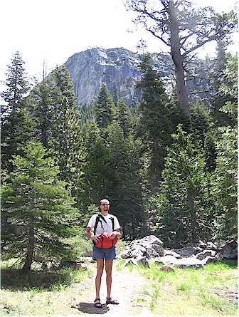
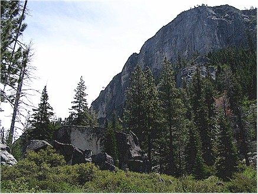
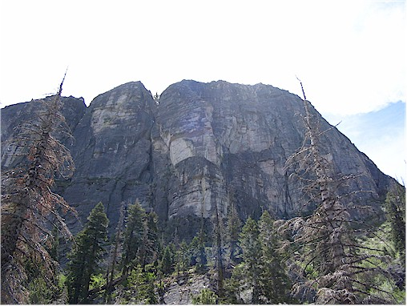
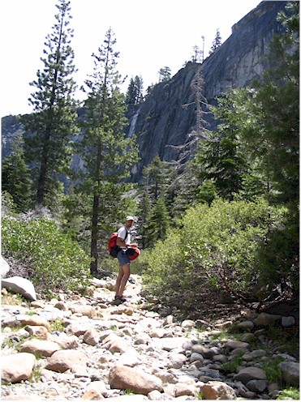
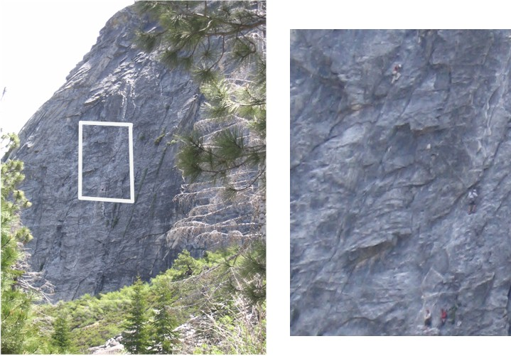
This is our first view of some climbers. The area I highlighted is enlarged in the picture on the left.
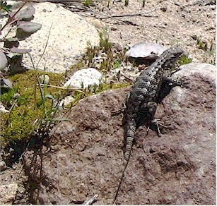
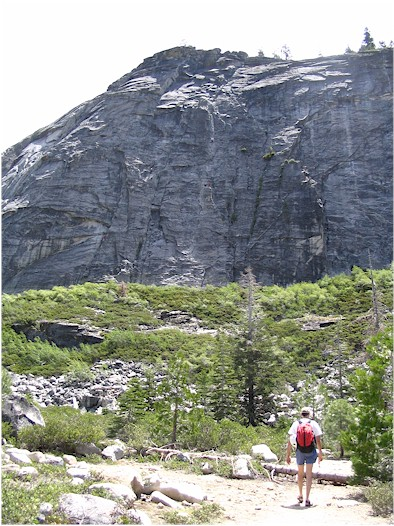
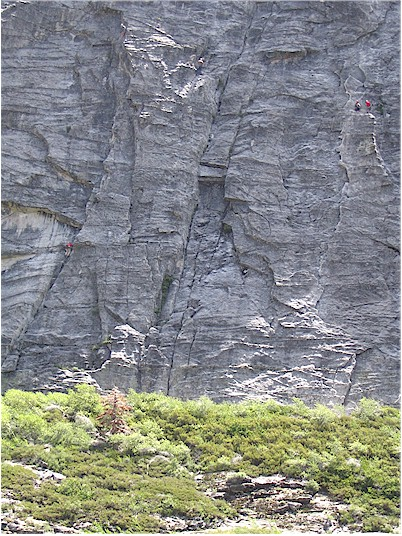
(I believe there are 5.)
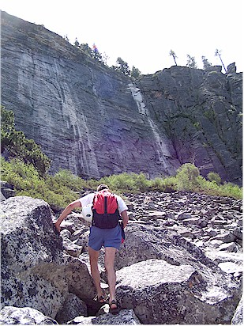
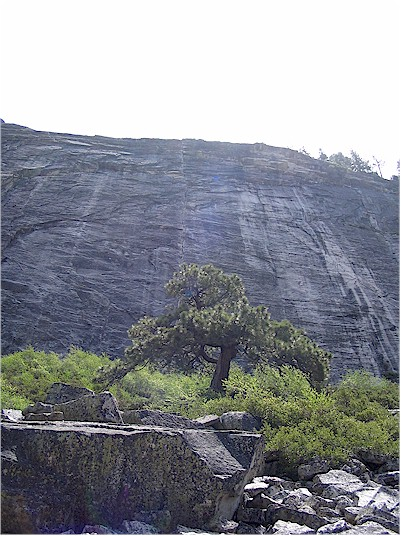
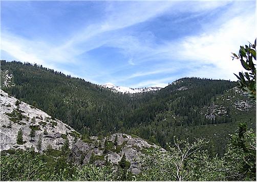
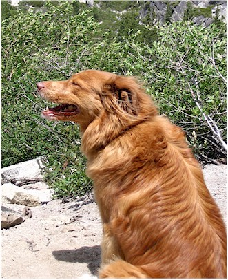
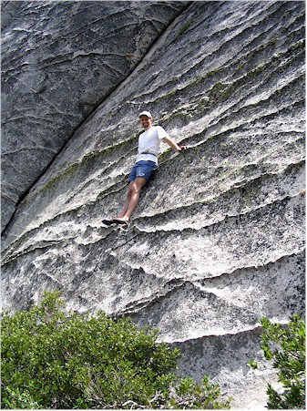
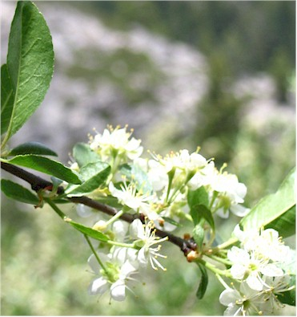
so we just hung out at (or on) the rock.
show the rock behind. It didn't really work but I'm posting it anyway.
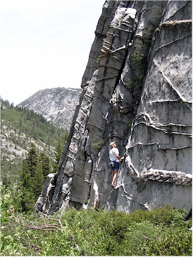
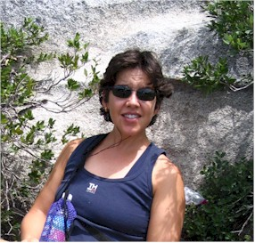
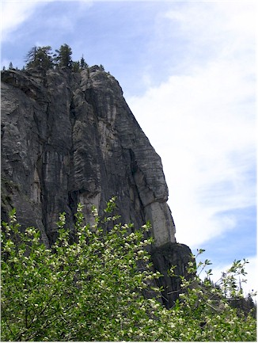
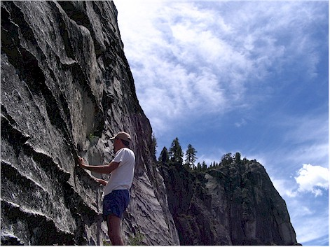
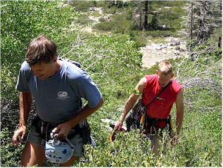
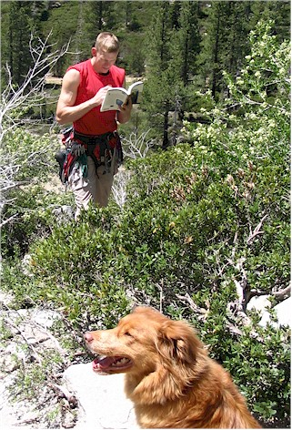
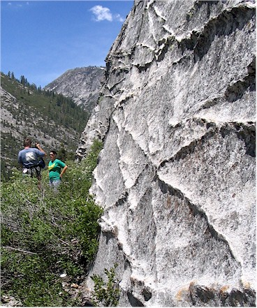
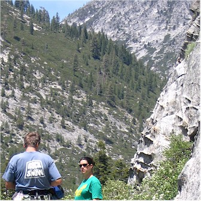
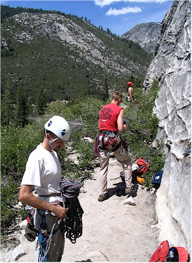
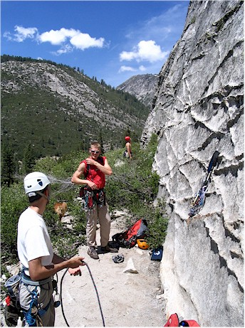
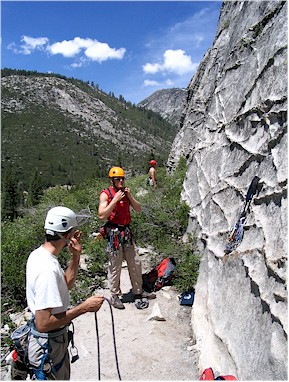
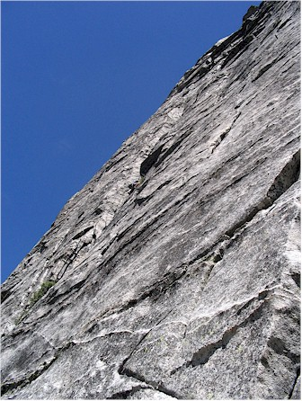
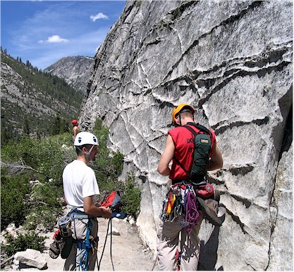
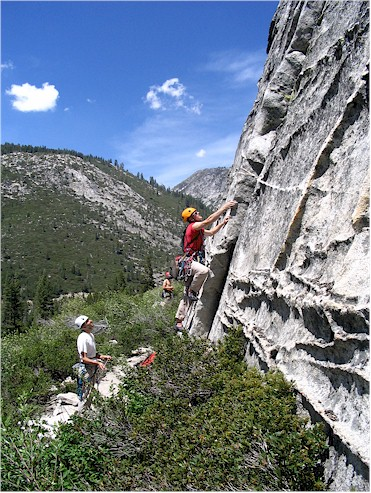
OK, enough messing around - it's time to get on the rock
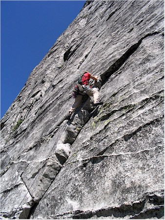
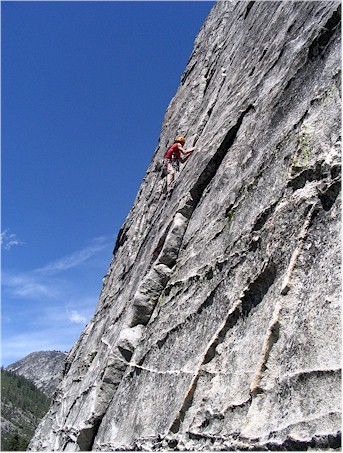
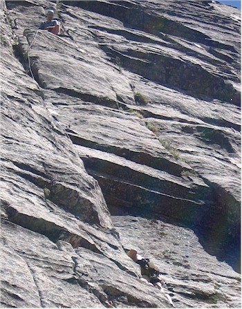
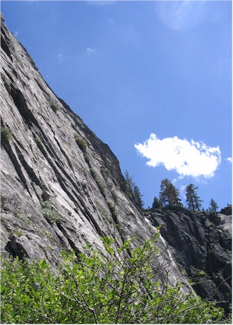
There were falcons nesting over by the those high trees.
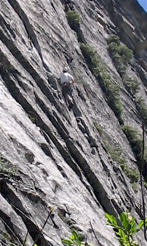
These are a couple pictures of Eric on the first pitch.
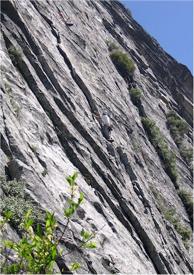
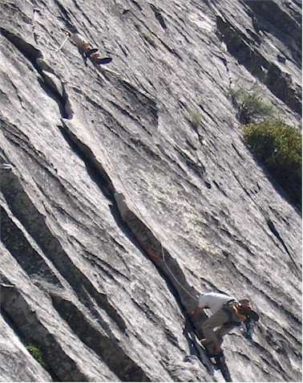
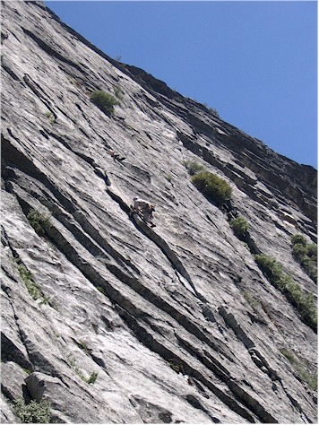
In these you can see Luc's feet as he belays from his 'perch' above
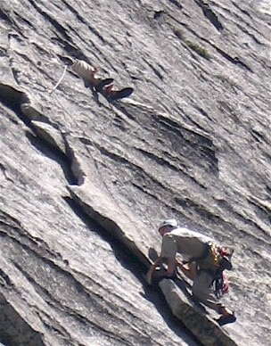
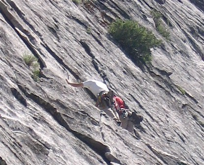
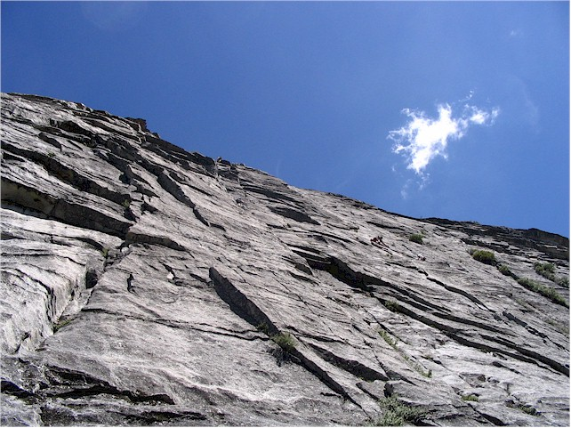
My view from the base of the cliff. You can see Luc
starting on
the 2nd pitch and Eric belaying him a little right of center in this shot.
At one point Kat had to make Madeline
get off of her chair. From that point on,
Kat was Madeline's very best friend.
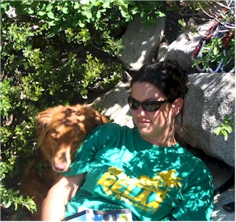
I apologize in advance to those viewing this with a slow connection. (Mom)
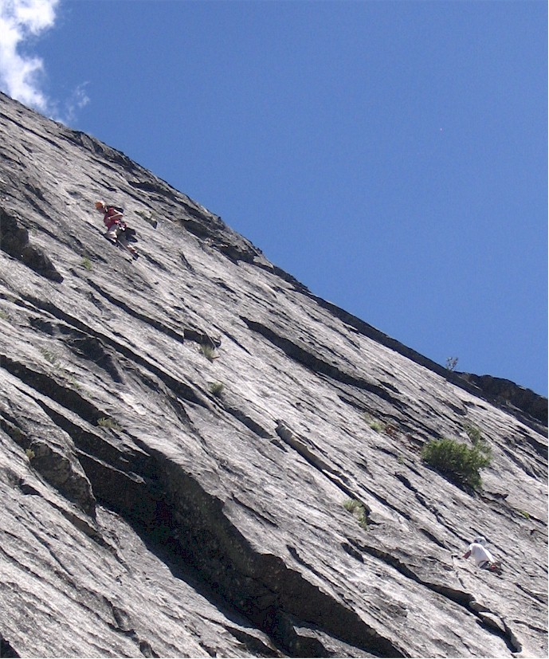
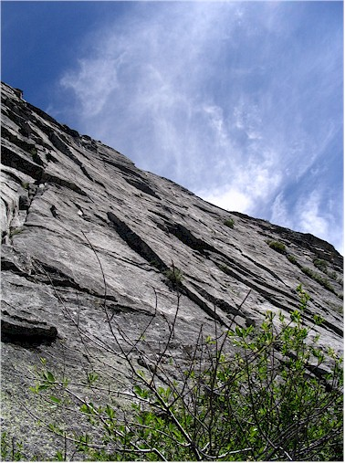
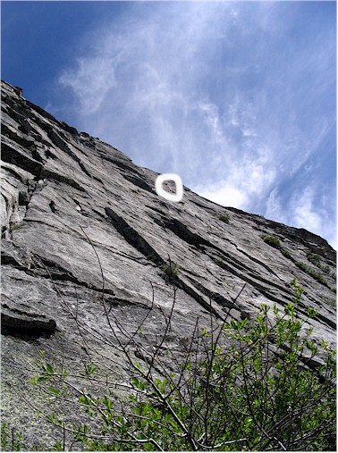
This is the same picture twice - one untouched and one showing where
Eric is located.
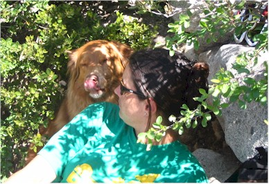
Kat was getting an ear full of
sweet nothings. (And doggie breath!)
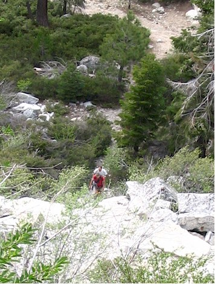
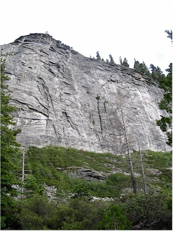
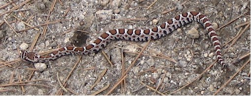
The first thing I encountered on the trail was this snake.
It was some kind of pit viper. It was only about a foot long but
thankfully I saw it before I stepped on it so it didn't hurt me.
This was the creek running
through the entrance to the area
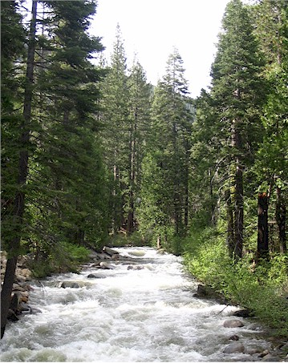
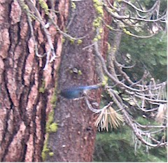
This is a blurry shot of a blue bird on a Ponderosa
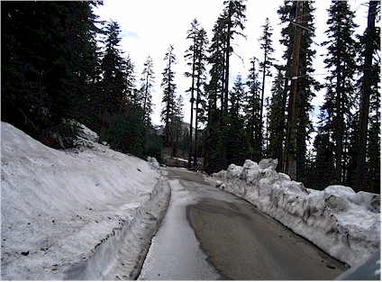
which was at the top of my scenic drive.
It was a very small lake but also very pretty.
This was the view of Lake Tahoe from the Lost Lake area.
A nice couple took this for me at a roadside pullout.
That's Lake Tahoe in the background.
I hung out at a health food store in South Lake Tahoe for
awhile, then went to get a closer look at the lake itself.
These shots were taken from Pope Beach.
Eric surrenders! After this we all jumped in the car and
started on the two hour drive to Twain Harte.
back to get Eric after he finished climbing.
We stopped at the pretty little town of Placerville for dinner.
What a neat area! We had a nice dinner and enjoyed our short time in
that town.
This little creek had a tiny waterfall right under the bridge that created the nicest 'babbling brook' noise you can imagine. It's all we could hear out the bedroom window and we slept amazingly well because of it.
We stayed at the Gables Cedar Creek Inn in Twain Harte, CA. We would recommend it to anyone!
On the way to the park we met this chuck wagon train.
You know, two weeks before this there had been a chuck
wagon festival in OKC.
Surely they didn't ride all the way there and back, did they? We
don't know, we didn't stop to ask.
This is not a redwood, but did smell very nice. We were looking at these 'wedges'
in the tree. You can see one at the lower right corner.
of the redwoods. However, the trail was an old road so it was very easy.
Eric's comment here was, "Gee, I sure hope we don't lose the trail."
Eric, on the lookout for a sequoia tree.
dug the tunnel through it years and years ago.
All the waterfalls and rivers were at there most beautiful.
Eric, getting in touch with his inner self.
(Actually, he was eating an orange and some pistachios!)
See the cars at the bottom for scale?
To steal a word from my friend Mowen,
that rock was ginormous.
available on the net very soon. In that video I misidentified this falls as Yosemite Falls.
I actually don't know what it is.
video camera from the incredible spray off the falls.
Eric, looking on in awe
was really lighting up the formations.
We also got to see two climbers just starting out on a
climb. Eric suspected they were getting things set up for an early
morning start.
The outlined area is enlarged in the picture to the left.
Only one of the best pictures I've ever taken.
It's nothing to do with the skill of the photographer so much as the skill of
the Creator!
{kind=link}
so we went there for dinner on our way out of the park. Unfortunately, what
we had actually been told was to see the Ahwahnee Hotel - but we got them confused.
of it I found on cookingforengineers.com. They aren't very similar
but we had a very nice meal nonetheless.
On the way out we saw a herd of deer and a fire.
Then it got dark and we saw nothing but highway signs telling us another 25 mph curve was ahead.
On Friday, we proclaimed it, "Rest Day" because we had worn ourselves completely out on the previous two days.
(Yes, we were tired even though we only did 4 of the 12
hikes I had planned at Yosemite.)
We went out for breakfast then back to the hotel to enjoy the nice weather at
a slower pace.
The hotel had free WiFi all over the hotel grounds - sweet!
It was very tucked away and overlooked the creek.

That afternoon we went to nearby Pinecrest Lake. We did part of a hiking trail that circles the lake. It's a very pretty spot.
The dog and that little girl in the picture on the left played fetch for AGES, it was cute.
King of the Hill
One of my new things is Geocaching. I had my GPS
with me and wanted to try it
out on a California cache. It was around here somewhere, but heck if I
know where it was.
Here's Eric, all smiles after a breakfast
of nearly every kind of fruit and granola
out on the lawn.
Saturday morning we toured Ironstone Vineyard near the town
of Murphys.
It was extremely difficult to find, but was a beautiful place.
vineyard nearby. Those vats and boxes are all wine in storage.
The oak is partly French and partly American.
remember. (Sorry) The caverns were blasted out of solid rock
then sprayed with gunite for protection, which makes them look fake.
It weighs 44 pounds. That was the last thing we saw on our tour.
Cassy out on the balcony of the house where she was getting ready.
Oh, and the long board they use to do insane antics.
These guys have turned smirking into an art form.
The whole "fam damly" - Alex, Romel, Luc, step father Joe, and youngest brother Chance
Last minute nerves?
I don't know, the man teaches people to fly fighter planes for a living, surely he can't be easily frightened!
Luc and his posse. He had no shortage of 'official dudes' that day.
The pretty little flower girls.
She and I now have something in common - we both gave
up perfectly easy to spell last names for very difficult ones!
New friends we've met through Luc & Cassy - Carley, Kat, Barbara (? I think!), Travis, Brad, I'm sorry but I've forgotten the little girl's name, and Q
Shawn, Aaron, and Travis
of Luc's Mom holding up a bottle of Tequilla - wouldn't you know
it, my batteries were dying and the picture didn't get stored. Darn!!
The man to the right of center is Cassy's grandma's brother.
This whole family stayed at our hotel and they kindly let us join them for a
fun night out
on the lawn one night, sharing their wine and listening to Dean Martin under
the stars.
We had to practically beg the batteries
in my camera to let me take this last
shot of our trip to California. Beautiful!